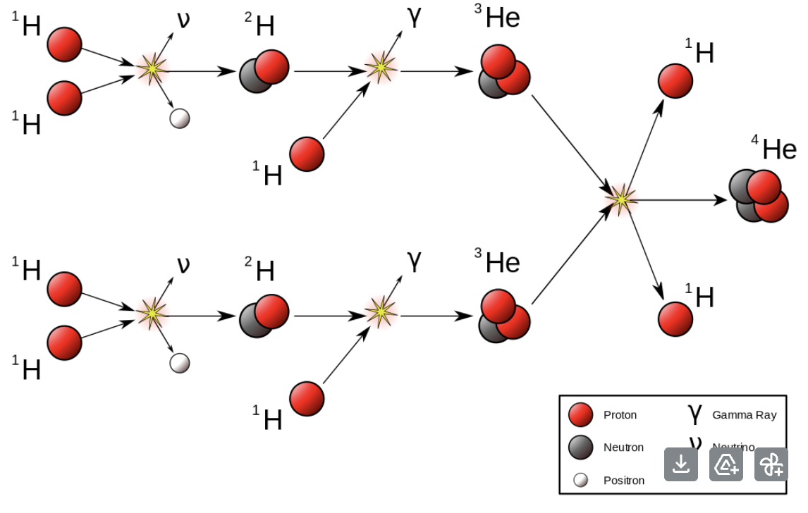

Energy • Physics
Nuclear Fusion - Harnessing the power of the sun
We are currently experiencing a dilemma about energy resources - the majority of our energy comes from fossil fuels. Fossil fuels reserves are being used up, and soon we will run out. Furthermore,they emit the greenhouse gases which are driving rapid global warming. But renewable energy isn’t reliable enough, as they rely on many conditions like weather or time of the day, and we would need to build large battery systems to make sure energy is being provided constantly. Nuclear energy, while clean, is also limited,and public opinion of it has been tarnished ever since Chernobyl. But there is another source, one which could be game changing. And the answer lies in the Sun.
Fusion in the Sun
The Sun produces 3.86×10^16 joules of energy per second. For comparison, Earth uses 5.8×10^20 a year. How does the Sun achieve this? The Sun is made out of plasma, which is a state of matter where the atoms are separated into nuclei and electrons. Around 3 quarters of the Sun consists of Hydrogen nuclei, all moving at very fast speeds due to the immense pressure and temperature. The extreme conditions of the Sun counteract the electrostatic force which repels nuclei apart,due to their similar charges. Most of these Hydrogen nuclei is Hydrogen-1, which consists of just 1 proton. When 2 of these nuclei collide, they fuse into Deuterium, a Hydrogen isotope with 1 proton and 1 neutron. Deuterium then collides with another proton to make Helium-3, with 2 protons and a neutron. Finally,2 Helium-3 nuclei collide to form Helium-4, as well as 2 protons, which can go on to collide with more protons. This process is known as nuclear fusion.
At each stage, a tiny amount of mass is converted into energy - less than 1%. This may not seem like a lot, but the Sun is colossal,and so even miniscule amounts of energy can sum up to impressive numbers. To summarise, nuclei collide to create heavier nuclei and energy.

Fusion on Earth
How then, do we mimic this process on Earth? After all,the collision of nuclei in the Sun stems from extremely high pressure and temperatures. On Earth,there are 2 ways we achieve fusion: Magnetic Confinement Fusion (MCF) and Inertial Confinement Fusion (ICF). MCF works by using an electric current to heat up plasma, which is held by magnetic fields. The fuel is injected into a torus (donut shape) shaped chamber known as a tokamak, and is heated up. The high energy neutrons emitted is absorbed by a blanket, and the heating up of the blanket is used to boil water. The steam rises and turns a turbine to generate useable energy. ICF,a newer and more experimental form,heats up a small fuel pellet using lasers. The lasers cause the pellet to implode, which holds it in place. The reaction creates high energy neutrons, which are absorbed by a blanket,similarly to MCF.
In our form of fusion,however, we fuse Deuterium and Tritium (1 proton and 2 neutrons) to make Helium-4 and an extra neutron. Deuterium is common,with 33 grams of Deuterium in a cubic metre of seawater. Tritium,on the other hand, is much rarer. In order to get Tritium, we bombard Lithium-6 ions with neutrons to create Helium-4 and Tritium.
Benefits and Drawbacks
The process of fusion is somewhat similar to fission, but both vary in many ways. Fission is breaking up heavy nuclei like Uranium-235 into smaller, lighter nuclei to generate energy. Fusion does the opposite: colliding lighter nuclei to generate energy and heavier elements. The byproducts of these nuclear processes also differ. Fission creates spent nuclear fuel, which is irradiated uranium from capturing free neutrons. Fusion also creates radioactive metal from neutron activation, but the radioactivity of fusion waste is often much less that waste from nuclear fusion. Fusion also generates Helium gas, which is inert and isn’t very reactive. Fusion is also safer because if the reaction fails,the plasma will cool, and the reaction stops.In contrast, fission can cause a nuclear meltdown if the reactor isn’t cooled sufficiently.
So if nuclear fusion is so good, why haven’t we transitioned to it The answer:it is too expensive. The total cost of ITER(the world’s largest tokamak) is estimated to be over $20 billion, and its annual budget is estimated to be around $2 billion. Furthermore,fusion power in general is estimated to cost around $150 per megawatt-hour(MWh), and in order for it to be viable, it would need to cost around$60/MWh.
Conclusion
Fusion may sound like theoretical science fiction - but it isn’t.There are many experimental fusion reactors around the world, like the International Thermonuclear Experimental Reactor(ITER), the world’s largest tokamak,as well as NIF in the USA, JET in the UK, and EAST in China. And it isn’t something we can ignore. Fusion is a clean,safe,and reliable way of producing energy compared to the fossil fuels we are currently using. And looking at how rapid climate change is progressing, we simply can’t continue burning fossil fuels. And while fusion is a very expensive alternative, the benefits surrounding it are simply too much to argue that fusion is unviable. Fusion is cleaner than fossil fuels, more reliable than renewable energy, and is safer than nuclear fission, and while the upfront costs may be high, switching to nuclear fusion may a step forward for humanity as a whole.